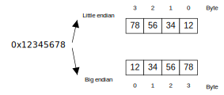
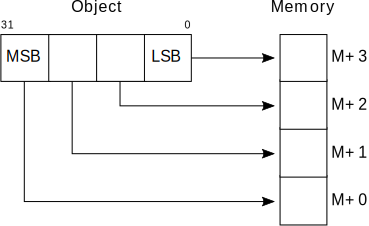
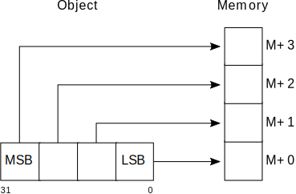

Byte Order(Endianess)
在 Binary —— Bitset & Bytes 中，我们通过打印 bitset 和 byte array，直观感受了二进制的位模式（bit pattern & binary representation）。然后，遗留下了三个问题：
- hex(2010) 输出十六进制是 0x7da，hexdump(2010) 输出内存中的字节数组是 {0xda, 0x7}，字节顺序为什么不同？
- 每2个byte组合而成的短整型 short array [0] 为什么是
0x3130，而非0x3031？ - 程序 test-conversion-narrow-down.c 输出结果是怎样的？
这三个问题的答案都涉及到字节序（Byte Order）问题。
storage order#
先来回顾一下 C Basic Types - Binary Representions 中提到的 LSB/MSB 概念:
LSB vs. MSB
The binary representation for non-negative integer values is always exactly what the term indicates: such a number is represented by binary digits \(b_0, b_1, \ldots, b_{p-1}\) called bits. Each of the bits has a value of 0 or 1. The value of such a number is computed as \(\sum_{i=0}^{p-1}b_i\ast2^i\).
The value p in that binary representation is called the precision of the underlying type. Bit \(b_0\) is called the least-significant bit, and LSB, \(b_{p−1}\) is the most-significant bit(MSB).
Of the bits \(b_i\) that are 1, the one with minimal index i is called the least-significant bit set, and the one with the highest index is the most-significant bit set.
在 The C Memory Model 中借 union 一值两析，由 storage order 进一步引出了 endianess 的概念：
endianess: big-endian & little-endian
That is, a platform provider might decide to provide a storage order that has the highest-order digits first, and then print lower-order digits one by one. The storage order, the endianness, as given for my machine, is called little-endian. A system that has high-order representation digits first is called big-endian. Both orders are commonly used by modern processor types. Some processors are even able to switch between the two orders on the fly.
ARM Cortex-A Series Programmer's Guide for ARMv8-A - Endianness:
There are two basic ways of viewing bytes in memory, either as Little-Endian (LE) or Big-Endian (BE). On big-endian machines, the most significant byte of an object in memory is stored at the lowest address, that is the address closest to zero. On little-endian machines, the least significant byte is stored at the lowest address. The term byte-ordering can also be used rather than endianness.

The designers of the ARM processor didn’t want to take sides in the little- vs. big-endian debate, so they made the ARM processor support both.
This data endianness is controlled independently for each Execution level. For EL3, EL2 and EL1, the relevant register of SCTLR_ELn.EE sets the endianness. The additional bit at EL1, SCTLR_EL1.E0E controls the data endian setting for EL0. In the AArch64 execution state, data accesses can be LE or BE, while instruction fetches are always LE.
aapcs64 - 5.8 Byte order ("Endianness"):
From a software perspective, memory is an array of bytes, each of which is addressable. This ABI supports two views of memory implemented by the underlying hardware.
- In a
little-endianview of memory the least significant byte of a data object is at the lowest byte address the data object occupies in memory. - In a
big-endianview of memory the least significant byte of a data object is at the highest byte address the data object occupies in memory.
The least significant bit in an object is always designated as bit 0.
The mapping of a word-sized data object to memory is shown in the following figures. All objects are pure-endian, so the mappings may be scaled accordingly for larger or smaller objects.


经由上述铺陈，字节序（Byte Order, Endianess）的概念已然明晰，概括来讲就是事关 storage order —— LSB/MSB who store first？
对于小尾端（little endian）系统，在内存起始地址处存放整数的低序号字节（LSB first）；反之，对于大尾端（big endian）系统，在内存起始地址处存放整数的高序号字节（MSB first）。
在 big endian 系统下，更符合人的直观视觉。例如 int 值 0x33323130，在内存中的存储顺序同人眼睛从左到右（高位到低位）的扫描顺序一致，MSB store first，memory byte array 为 {0x33, 0x32, 0x31, 0x30}；在 little endian 系统下，LSB store first，先存储低位字节，int 值 0x33323130 在 memory 中的 byte array 为 {0x30, 0x31, 0x32, 0x33}。
在移动嵌入式领域，统治市场的 MIPS 和 ARM 处理器可通过配置寄存器采用不同的字节序，默认采用 Little-Endian。但 ARM 始终采用 Big-Endian 存储浮点数。早期使用 PowerPC 处理器的 Mac 采用大字节序，后来的 Mac 同 Windows PC 一样都采用 Intel x86 芯片，因此也都是小字节序存储的。
64-bit PowerPC Function Calling Conventions: This environment uses the big-endian byte ordering scheme to store numeric and pointer data types. That is, the most significant bytes go first, followed by the least significant bytes.
《深入理解计算机系统》（Computer Systems - A Programmer’s Perspective）中 2.1: Information Storage | 2.1.3: Addressing and Byte Ordering 也有关于 endianess 的详细论述。
assembly - QWORD Storing / implementing using 32-bit REGs.? - Stack Overflow
Overview of ARM64 ABI conventions - Endianness
-mbig-endian: Generate code for a big-endian target. This is the default for HP-UX.
-mlittle-endian: Generate code for a little-endian target. This is the default for AIX5 and GNU/Linux.
-mbig-endian: Generate big-endian code. This is the default when GCC is configured for an ‘aarch64_be-*-*’ target.
-mlittle-endian: Generate little-endian code. This is the default when GCC is configured for an ‘aarch64-*-*’ but not an ‘aarch64_be-*-*’ target.
Pros of Little Endian#
Programming with 64-Bit ARM Assembly Language: Single Board Computer Development for Raspberry Pi and Mobile Devices | Chapter 2: Loading and Adding - Big vs. Little Endian
The advantage of little-endian format is that it makes it easy to change the size of integers, without requiring any address arithmetic. If you want to convert a 4-byte integer to a 1-byte integer, you take the first byte. Assuming the integer is in the range of 0–255, and the other three bytes are zero. For example, if memory contains the 4 bytes or word for 1, in little endian, the memory contains 01 00 00 00.
If we want the 1-byte representation of this number, we take the first byte; for the 16-bit representation, we take the first two bytes. The key point is that the memory address we use is the same in all cases, saving us an instruction cycle adjusting it.
When we are in the debugger, we will see more representations, and these will be pointed out again as we run into them.
byte order transformation
Note even though Linux uses little endian, many protocols like TCP/IP used on the internet use big endian and so require a transformation when moving data from the computer to the outside world.
network byte order#
从维基百科中关于 Endianness 的介绍，其最早源起于 网络编程，核心就是“byte significance compared to earliness”的收发次序问题。
Endianness
In computing, endianness is the order in which bytes within a word of digital data are transmitted over a data communication medium or addressed (by rising addresses) in computer memory, counting only byte significance compared to earliness.
Endianness is primarily expressed as big-endian (BE) or little-endian (LE), terms introduced by Danny Cohen into computer science for data ordering in an Internet Experiment Note published in 1980.
TCP/IP 协议统一规定采用大端方式封装解析传输数据，也称为网络字节顺序（network byte order，TCP/IP-endian）。
RFC 1700 - Assigned Numbers - Data Notations
https://datatracker.ietf.org/doc/rfc1700/
The convention in the documentation of Internet Protocols is to express numbers in decimal and to picture data in "big-endian" order [COHEN]. That is, fields are described left to right, with the most significant octet on the left and the least significant octet on the right.
The order of transmission of the header and data described in this document is resolved to the octet level. Whenever a diagram shows a group of octets, the order of transmission of those octets is the normal order in which they are read in English. For example, in the following diagram the octets are transmitted in the order they are numbered.
0 1 2 3
0 1 2 3 4 5 6 7 8 9 0 1 2 3 4 5 6 7 8 9 0 1 2 3 4 5 6 7 8 9 0 1
+-+-+-+-+-+-+-+-+-+-+-+-+-+-+-+-+-+-+-+-+-+-+-+-+-+-+-+-+-+-+-+-+
| 1 | 2 | 3 | 4 |
+-+-+-+-+-+-+-+-+-+-+-+-+-+-+-+-+-+-+-+-+-+-+-+-+-+-+-+-+-+-+-+-+
| 5 | 6 | 7 | 8 |
+-+-+-+-+-+-+-+-+-+-+-+-+-+-+-+-+-+-+-+-+-+-+-+-+-+-+-+-+-+-+-+-+
| 9 | 10 | 11 | 12 |
+-+-+-+-+-+-+-+-+-+-+-+-+-+-+-+-+-+-+-+-+-+-+-+-+-+-+-+-+-+-+-+-+
Transmission Order of Bytes
Whenever an octet represents a numeric quantity the left most bit in the diagram is the high order or most significant bit. That is, the bit labeled 0 is the most significant bit. For example, the following diagram represents the value 170 (decimal).
0 1 2 3 4 5 6 7
+-+-+-+-+-+-+-+-+
|1 0 1 0 1 0 1 0|
+-+-+-+-+-+-+-+-+
Significance of Bits
Similarly, whenever a multi-octet field represents a numeric quantity the left most bit of the whole field is the most significant bit. When a multi-octet quantity is transmitted the most significant octet is transmitted first.
以下为 MSDN 中关于 Packet byte/bit order 的阐述：
For packets, the bit numbering convention followed is the same as that used in RFCs, namely: the high (most significant) bit of the first byte to hit the wire is in packet bit 0, and the low bit of the last byte to hit the wire is in packet bit 31 (so that the bits are shown from left-to-right in the order they naturally appear over the network).

Networking and Internet | Windows Sockets 2 | Byte Ordering:
Care must always be taken to account for any differences between the byte ordering used for storing integers by the host architecture and the byte ordering used on the wire by individual transport protocols. Any reference to an address or port number passed to or from a Windows Sockets routine must be in the network order (big-endian) for the protocol being utilized.
在网络通信协议程序中，在进行网络数据的收发时，需要发收双方执行字节序转换（convert values between host and network byte order）。
在 Linux 上执行 man BYTEORDER 可以查看相关编程接口，也可参考 The GNU C Library 文档：Sockets | The Internet Namespace | Byte Order Conversion。
man BYTEORDER
$ man BYTEORDER # man htonl
BYTEORDER(3) Linux Programmer's Manual BYTEORDER(3)
NAME
htonl, htons, ntohl, ntohs - convert values between host and network byte order
SYNOPSIS
#include <arpa/inet.h>
uint32_t htonl(uint32_t hostlong);
uint16_t htons(uint16_t hostshort);
uint32_t ntohl(uint32_t netlong);
uint16_t ntohs(uint16_t netshort);
DESCRIPTION
The htonl() function converts the unsigned integer hostlong from host byte order to
network byte order.
The htons() function converts the unsigned short integer hostshort from host byte order
to network byte order.
The ntohl() function converts the unsigned integer netlong from network byte order to
host byte order.
The ntohs() function converts the unsigned short integer netshort from network byte or‐
der to host byte order.
On the i386 the host byte order is Least Significant Byte first, whereas the network
byte order, as used on the Internet, is Most Significant Byte first.
在 macOS/ubuntu 下执行 grep -RH "htonl\|ntohl" 可以查找到：
- macOS: usr/include/sys/_endian.h 中根据
__DARWIN_BYTE_ORDER的值定义了字节序转换宏htonl/ntohl，在 usr/include/arpa/inet.h 和 usr/include/netinet/in.h 中包含了 <sys/_endian.h>。 - ubuntu: /usr/include/netinet/in.h 中根据
__BYTE_ORDER的值定义了字节序转换宏htonl/ntohl。 - 在 macOS/ubuntu 下，arpa/inet.h 中都包含了 <netinet/in.h>。
在C/S通信程序中，发送方将本地数据调用 htons/htonl/htonll，序列化打包到 buffer，再调用 socket API 的 send() 接口将数据发送到网络。接收方等待 I/O 通知，实时调用 socket API 的 recv() 接口将数据从网卡接收到用户层，用户层需按照 TLV 解包，对等调用 ntohs/ntohl/ntohll 解析复原出原始数值。
假设 A 和 B 都是 Little-Endian，A 要给 B 发送一个短整数 s=0x7da，其在内存中的字节数组是 {0xda, 0x7}。以下程序片段简单示意了发收双方的写/读字节转换：
__BYTE_ORDER__#
在 Dump Compiler Options 中有介绍如何 dump compiler predefined macros。
clang/gcc 执行 echo | cpp -dM 预处理，打印出来的预定义宏中字节序相关的宏如下：
从 __BYTE_ORDER__ 宏定义来看，两种平台均为小尾端字节序（__ORDER_LITTLE_ENDIAN__），macOS 还定义了宏 __LITTLE_ENDIAN__ 的值为 1。
在 macOS/ubuntu 下，可以执行 grep 命令，在 usr/include 中查找哪些头文件中定义了这些宏。
# mbpa2991/arm64
$ cd `xcrun --show-sdk-path`
$ grep -REl "#.*define.*(BYTE_ORDER|BIG_ENDIAN|LITTLE_ENDIAN|PDP_ENDIAN)" usr/include 2>/dev/null
# rpi4b-ubuntu/aarch64
$ grep -REl "#.*define.*(BYTE_ORDER|BIG_ENDIAN|LITTLE_ENDIAN|PDP_ENDIAN)" /usr/include 2>/dev/null
将 grep 命令的选项 l 改为 H 可列出具体匹配的行和内容。
mbpa2991-macOS#
在 mbpa2991-macOS/arm64 中，i386 和 arm 均定义了 BYTE_ORDER 为 __DARWIN_BYTE_ORDER=__DARWIN_LITTLE_ENDIAN。
grep -REH usr/include under macOS
$ cd `xcrun --show-sdk-path`
$ grep -REH "#.*define.*(BYTE_ORDER|BIG_ENDIAN|LITTLE_ENDIAN|PDP_ENDIAN)" usr/include 2>/dev/null
usr/include/i386/endian.h:#define __DARWIN_LITTLE_ENDIAN 1234 /* LSB first: i386, vax */
usr/include/i386/endian.h:#define __DARWIN_BIG_ENDIAN 4321 /* MSB first: 68000, ibm, net */
usr/include/i386/endian.h:#define __DARWIN_PDP_ENDIAN 3412 /* LSB first in word, MSW first in long */
usr/include/i386/endian.h:#define __DARWIN_BYTE_ORDER __DARWIN_LITTLE_ENDIAN
usr/include/i386/endian.h:#define LITTLE_ENDIAN __DARWIN_LITTLE_ENDIAN
usr/include/i386/endian.h:#define BIG_ENDIAN __DARWIN_BIG_ENDIAN
usr/include/i386/endian.h:#define PDP_ENDIAN __DARWIN_PDP_ENDIAN
usr/include/i386/endian.h:#define BYTE_ORDER __DARWIN_BYTE_ORDER
usr/include/arm/endian.h:#define __DARWIN_LITTLE_ENDIAN 1234 /* LSB first: i386, vax */
usr/include/arm/endian.h:#define __DARWIN_BIG_ENDIAN 4321 /* MSB first: 68000, ibm, net */
usr/include/arm/endian.h:#define __DARWIN_PDP_ENDIAN 3412 /* LSB first in word, MSW first in long */
usr/include/arm/endian.h:#define __DARWIN_BYTE_ORDER __DARWIN_LITTLE_ENDIAN
usr/include/arm/endian.h:#define LITTLE_ENDIAN __DARWIN_LITTLE_ENDIAN
usr/include/arm/endian.h:#define BIG_ENDIAN __DARWIN_BIG_ENDIAN
usr/include/arm/endian.h:#define PDP_ENDIAN __DARWIN_PDP_ENDIAN
usr/include/arm/endian.h:#define BYTE_ORDER __DARWIN_BYTE_ORDER
usr/include/libkern/OSByteOrder.h:#if defined(__LITTLE_ENDIAN__)
usr/include/libkern/OSByteOrder.h:#elif defined(__BIG_ENDIAN__)
usr/include/libkern/OSByteOrder.h:#if defined(__BIG_ENDIAN__)
usr/include/libkern/OSByteOrder.h:#elif defined(__LITTLE_ENDIAN__)
- usr/include/mach/ndr.h 中定义了
NDR_INT_BIG_ENDIAN=0，NDR_INT_LITTLE_ENDIAN=1。 - 在 usr/include/TargetConditionals.h 中，gcc based compiler used on Mac OS X 基于
__BYTE_ORDER__的值定义互斥值TARGET_RT_LITTLE_ENDIAN/TARGET_RT_BIG_ENDIAN。 - 在 usr/include/c++/v1/__config 中，
__BYTE_ORDER__和__LITTLE_ENDIAN__/__BIG_ENDIAN__宏定义与否及其值来定义宏_LIBCPP_LITTLE_ENDIAN/_LIBCPP_BIG_ENDIAN。 - 在 usr/include/c++/v1/__bit/endian.h 中，对于 _LIBCPP_STD_VER >= 20（since c++20），判断
_LIBCPP_LITTLE_ENDIAN/_LIBCPP_BIG_ENDIAN定义enum class endian。
在早期（before C99, c++11）没有定义 64bit long long，需要用两个 int32 复合成结构体来模拟一个 int64 整形数据。两个 32bit 的 WORD 在 struct 中的顺序需要考虑字节序（判断宏 TARGET_RT_BIG_ENDIAN）。
/* avoid redeclaration if libkern/OSTypes.h */
#ifndef _OS_OSTYPES_H
#if TARGET_RT_BIG_ENDIAN
struct wide {
SInt32 hi;
UInt32 lo;
};
typedef struct wide wide;
struct UnsignedWide {
UInt32 hi;
UInt32 lo;
};
typedef struct UnsignedWide UnsignedWide;
#else
struct wide {
UInt32 lo;
SInt32 hi;
};
typedef struct wide wide;
struct UnsignedWide {
UInt32 lo;
UInt32 hi;
};
typedef struct UnsignedWide UnsignedWide;
#endif /* TARGET_RT_BIG_ENDIAN */
#endif
rpi4b-ubuntu#
在 rpi4b-ubuntu/arm64 中，little_endian.h 和 big_endian.h 各自定义了大小端相关的宏及对应 BITFIELD。
grep -REH /usr/include under ubuntu
$ grep -REH "#.*define.*(BYTE_ORDER|BIG_ENDIAN|LITTLE_ENDIAN|PDP_ENDIAN)" /usr/include 2>/dev/null
/usr/include/linux/byteorder/little_endian.h:#define __LITTLE_ENDIAN 1234
/usr/include/linux/byteorder/little_endian.h:#define __LITTLE_ENDIAN_BITFIELD
/usr/include/linux/byteorder/big_endian.h:#define __BIG_ENDIAN 4321
/usr/include/linux/byteorder/big_endian.h:#define __BIG_ENDIAN_BITFIELD
/usr/include/aarch64-linux-gnu/bits/endianness.h:# define __BYTE_ORDER __BIG_ENDIAN
/usr/include/aarch64-linux-gnu/bits/endianness.h:# define __BYTE_ORDER __LITTLE_ENDIAN
/usr/include/aarch64-linux-gnu/bits/endian.h:#define __LITTLE_ENDIAN 1234
/usr/include/aarch64-linux-gnu/bits/endian.h:#define __BIG_ENDIAN 4321
/usr/include/aarch64-linux-gnu/bits/endian.h:#define __PDP_ENDIAN 3412
/usr/include/aarch64-linux-gnu/bits/endian.h:# define __FLOAT_WORD_ORDER __BYTE_ORDER
/usr/include/endian.h:# define LITTLE_ENDIAN __LITTLE_ENDIAN
/usr/include/endian.h:# define BIG_ENDIAN __BIG_ENDIAN
/usr/include/endian.h:# define PDP_ENDIAN __PDP_ENDIAN
/usr/include/endian.h:# define BYTE_ORDER __BYTE_ORDER
最底层 bits/endianness.h 中根据是否定义了 __AARCH64EB__ 宏，来进一步定义 __BYTE_ORDER：
#ifndef _BITS_ENDIAN_H
# error "Never use <bits/endianness.h> directly; include <endian.h> instead."
#endif
/* AArch64 has selectable endianness. */
#ifdef __AARCH64EB__
# define __BYTE_ORDER __BIG_ENDIAN
#else
# define __BYTE_ORDER __LITTLE_ENDIAN
#endif
bits/endian.h 包含了 <bits/endianness.h>，定义了 __LITTLE_ENDIAN、__BIG_ENDIAN、__PDP_ENDIAN 和 __FLOAT_WORD_ORDER：
#ifndef _BITS_ENDIAN_H
#define _BITS_ENDIAN_H 1
/* Definitions for byte order, according to significance of bytes,
from low addresses to high addresses. The value is what you get by
putting '4' in the most significant byte, '3' in the second most
significant byte, '2' in the second least significant byte, and '1'
in the least significant byte, and then writing down one digit for
each byte, starting with the byte at the lowest address at the left,
and proceeding to the byte with the highest address at the right. */
#define __LITTLE_ENDIAN 1234
#define __BIG_ENDIAN 4321
#define __PDP_ENDIAN 3412
/* This file defines `__BYTE_ORDER' for the particular machine. */
#include <bits/endianness.h>
/* Some machines may need to use a different endianness for floating point
values. */
#ifndef __FLOAT_WORD_ORDER
# define __FLOAT_WORD_ORDER __BYTE_ORDER
#endif
/usr/include/endian.h 包含了 <bits/endian.h>，向上层用户提供头文件：
/* Get the definitions of __*_ENDIAN, __BYTE_ORDER, and __FLOAT_WORD_ORDER. */
#include <bits/endian.h>
#ifdef __USE_MISC
# define LITTLE_ENDIAN __LITTLE_ENDIAN
# define BIG_ENDIAN __BIG_ENDIAN
# define PDP_ENDIAN __PDP_ENDIAN
# define BYTE_ORDER __BYTE_ORDER
#endif
/usr/include/linux 下的网络协议实现相关头文件 if_packet.h,tcp.h,ip.h,icmp.h,igmp.h,cdrom.h 中判断是否定义了 __LITTLE_ENDIAN_BITFIELD / __BIG_ENDIAN_BITFIELD。其他头文件中主要判断 __BYTE_ORDER 的值。
test endianess#
我们在前面利用编译器预处理输出了字节序相关的 predefined macros，然后通过 grep 查找 usr/include 下相关宏定义所在的头文件。
- macOS 上的 i386/endian.h 和 arm/endian.h 不同架构下清晰定义了
BYTE_ORDER为小尾端，没找到__LITTLE_ENDIAN__定义处。 -
ubuntu 最底层 bits/endianness.h 中根据是否定义了
__AARCH64EB__宏，来进一步定义了__BYTE_ORDER。- 从 dump 出的 predefined macros 找到了
#define __AARCH64EL__ 1，没有定义__AARCH64EB__，即小尾端。
- 从 dump 出的 predefined macros 找到了
Numerics library - Bit manipulation c++20 引入了 std::endian —— indicates the endianness of scalar types.
c++20 std::endian
参考 20230510 ISO/IEC-N4950 中 22.15.8 Endian：
Two common methods of byte ordering in multibyte scalar types are big-endian and little-endian in the execution environment. Big-endian is a format for storage of binary data in which the most significant byte is placed first, with the rest in descending order. Little-endian is a format for storage of binary data in which the least significant byte is placed first, with the rest in ascending order. This subclause describes the endianness of the scalar types of the execution environment.
If all scalar types have size 1 byte, then all of endian::little, endian::big, and endian::native have the same value. Otherwise, endian::little is not equal to endian::big. If all scalar types are big-endian, endian::native is equal to endian::big. If all scalar types are little-endian, endian::native is equal to endian::little. Otherwise, endian::native is not equal to either endian::big or endian::little.
最后，我们基于 union 同一块内存的不同解析来测试系统的字节序。
- isBigEndian: 无符号短整型 us 占用 2 个字节，字节指针 (unsigned char *)&us 指向第1个字节。如果是大端顺序存放，第1个字节存放高位 0x34。
- isLittleEndian: 联合类型 c，最长单元为短整型 a，占用 2 个字节。c.a、c.b 都指向数据结构的起始位置，即内存中的第 1 个字节。c.a=0x0001，当小端存放时，第 1 个字节存放低位 0x01，即 c.b=0x1。
win10/x86_64，mbpa2991-macOS/arm64 和 rpi4b-ubuntu/aarch64 下编译运行，均输出如下：
# win10 MSVC 2022/x86_64
>cl test-endianess.c && test-endianess.exe
# mbpa2991-macOS/arm64, rpi4b-ubuntu/aarch64
$ cc test-endianess.c -o test-endianess -g && ./test-endianess
endianess = LITTLE_ENDIAN
refs#
IBM z/OS - Network byte order
IBM z/VM - Network byte order and host byte order
What Is The Endianness of Captured Packet Headers? - Ask Wireshark